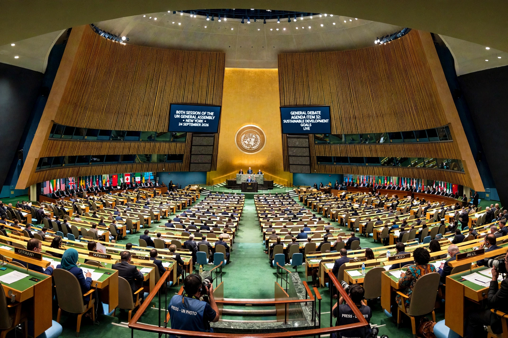

The Uniting for Peace resolution (General Assembly resolution 377 A (V)) was adopted on 3 November 1950, during the Korean War. It provides that when the Security Council, because of a lack of unanimity among its permanent members, fails to exercise its primary responsibility for the maintenance of international peace and security, the General Assembly shall consider the matter immediately.
Under the resolution, the General Assembly may be convened in an emergency special session within twenty-four hours, at the request of the Security Council (on the vote of any nine members, free of the veto) or of a majority of UN member states. The Assembly may recommend collective measures, including, in the case of a breach of the peace or act of aggression, the use of armed force when necessary.
Emergency special sessions have been convened on occasions including the Suez Crisis (1956) — leading to the first UN Emergency Force — the Soviet intervention in Hungary (1956), the Six-Day War (1967), and, in 2022, following Russia's invasion of Ukraine.
Because General Assembly resolutions are generally recommendatory rather than binding, scholars debate how far Uniting for Peace can authorise enforcement action, which Chapter VII of the Charter reserves to the Council. In practice the procedure is valued as a political and legitimating route around a deadlocked Council.